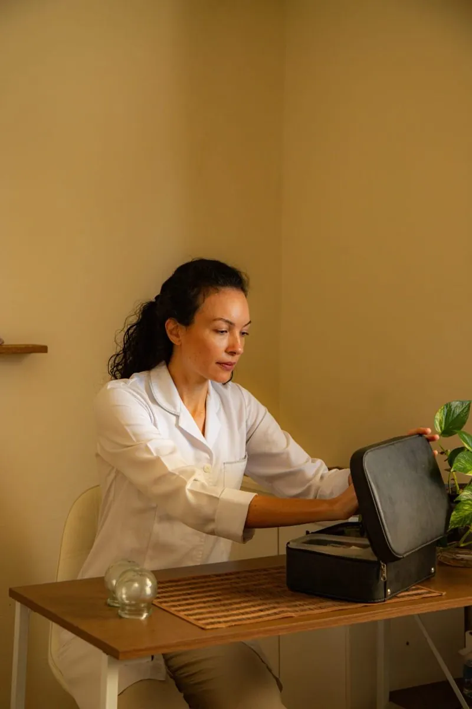
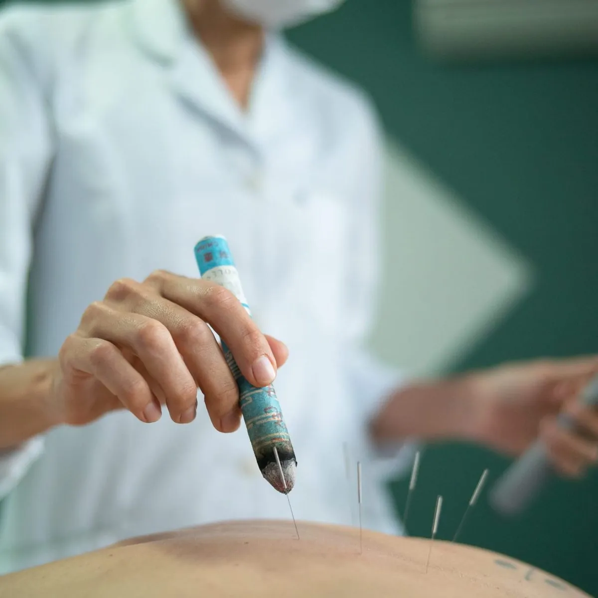
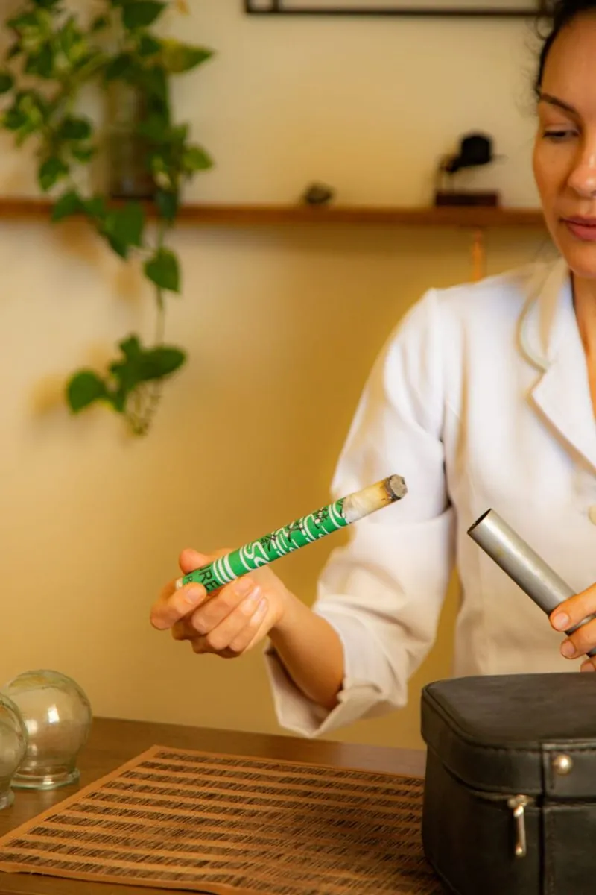
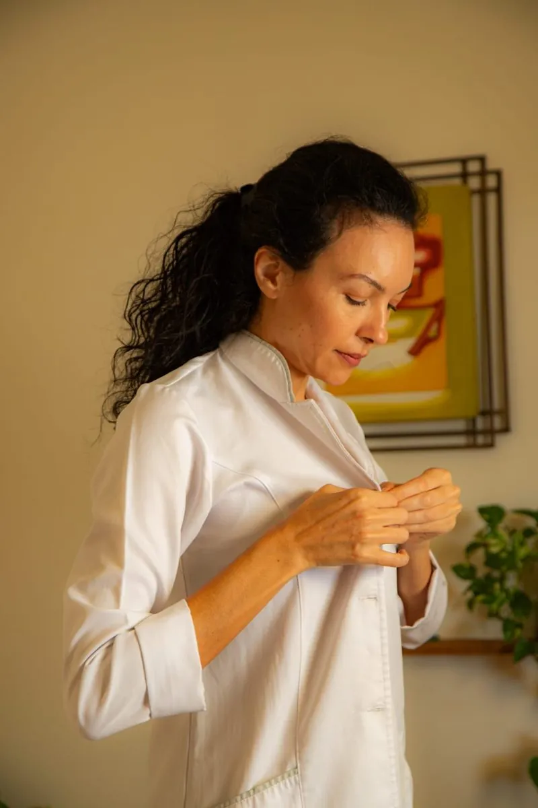
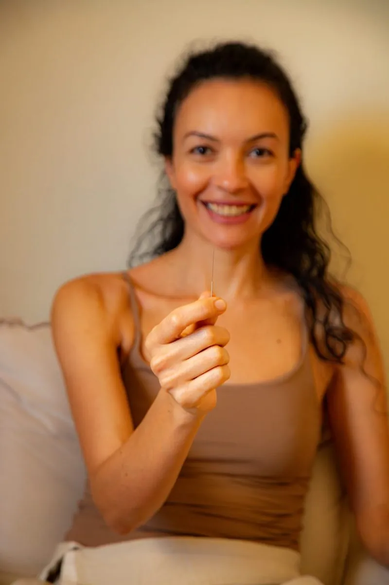

01
Acupuncture
By stimulating specific points on the body, acupuncture seeks to modulate physiological responses and support balance. The choice of points and the course of treatment are tailored to each person.
Listen to the body.
Cultivate balance.
An individualized approach to health, inspired by Chinese Medicine and Taoist philosophy. Care for pain, symptoms and imbalances that respects your rhythms, strengthens your vitality and cultivates a life with more presence.
ACUPUNCTURE · CHINESE MEDICINE · NATUROLOGY · FLORIANÓPOLIS, BRAZIL
Care that considers the whole person.
Acupuncture and the practices of Chinese Medicine are part of an integrative approach that considers the body, the mind, the emotions and our relationship with the environment. Through traditional therapeutic resources, care seeks to support self-regulation, ease discomfort and help the body's functions find balance.
The aim is to look beyond the immediate complaint: to understand what your body is telling you and, together, build possible paths toward a life with more well-being, energy and vitality.
Chinese Medicine brings together different resources and guidance that can be combined according to each person, their stage of life and their needs.
By stimulating specific points on the body, acupuncture seeks to modulate physiological responses and support balance. The choice of points and the course of treatment are tailored to each person.
Food, sleep, movement and routine are all part of care. Chinese dietary therapy considers the qualities of foods and how they relate to each person's needs, offering practical guidance for everyday life.
There is no single formula for everyone. Listening, observation and an understanding of your context guide a care plan that fits your constitution, your complaints and your stage of life.
Beyond needles, Chinese Medicine offers complementary techniques such as the warmth of moxibustion and cupping therapy. Each resource is chosen according to the assessment and each person's moment.



Acupuncture and Chinese Medicine can be used as complementary care for a range of health conditions. Some examples of concerns seen at the clinic:
Sessions are complementary care: they do not replace medical or psychological follow-up, and prescribed medication should not be stopped without medical advice. Each case is assessed individually, and responses vary from person to person.
Tell us your concern on WhatsApp ↗In Chinese Medicine, understanding the individual is an essential part of care. The therapeutic plan is built from a broad assessment and can be adjusted as each person progresses and responds.

Getting to know your history, your complaints, your habits and what you want to care for.
Observing patterns and needs from the perspective of Chinese Medicine.
Defining the therapeutic resources and guidance that fit your context.
Reassessing responses and adapting care throughout the process.

Chinese Medicine is an ancient tradition that developed a comprehensive understanding of the human being. In dialogue with Taoist philosophy, it starts from the idea that we are part of nature and constantly in relation with its movements and transformations.
Just as the seasons follow one another, our body also responds to cycles: it alternates between activity and rest, adaptation and withdrawal. Sleep, food, emotions, climate and routine all take part in this dynamic.
This perspective broadens our understanding of care. Rather than looking only at isolated signs, it seeks to recognize relationships, patterns and needs. From there, it suggests practices and everyday choices that fit each person and their stage of life.
Cultivating this relationship with your own rhythms can support a more balanced, conscious and vibrant life — not as a promise of longevity, but as an ongoing path of attention and care.

Monique Miranda is a naturologist and acupuncturist. Naturology is a Brazilian health profession focused on integrative and complementary practices. Her work is grounded in Chinese Medicine and inspired by Taoist philosophy, with an approach that honors each person's uniqueness and the relationship between body, habits and environment.
She sees clients at her own clinic in Campeche, in the south of Florianópolis island, Santa Catarina, Brazil. In every session, she offers a space of listening and welcome, where an understanding of your stage of life guides the choice of therapeutic resources and care practices.
Care is not a ready-made recipe: it is a path built together.
Excerpts from reviews on Google, translated from Portuguese.
Monique is a great professional and the space is welcoming — everything was perfect.
Each session brought relief, balance and real improvements to my health.
Congratulations on your work and dedication!
Some information to help you get to know the approach and the sessions.

A therapeutic practice from Chinese Medicine that uses very fine needles inserted at specific points on the body. How it is applied depends on each person's assessment and care goals.
No. Its traditional approach seeks to understand the person as a whole, looking at signs, habits, emotions, diet, sleep and life context to guide care.
They are traditional Chinese Medicine resources. Moxibustion uses the heat of mugwort on specific points of the body; cupping uses cups that create gentle suction on the skin. Their use depends on the individual assessment.
A traditional approach to food that considers the characteristics of each food and how they relate to individual needs. Guidance is tailored to each person's context and routine.
Acupuncture and Chinese Medicine can be used as complementary care for concerns such as anxiety, stress, depression, insomnia, acute and chronic pain, migraine, fibromyalgia, menstrual cramps, PMS, menopause symptoms, constipation and rhinitis. Each case is assessed individually. See conditions
No. Acupuncture and Chinese Medicine are complementary care and can go hand in hand with medical, psychological or other health professional follow-up. Prescribed medication should not be stopped without medical advice.
Not necessarily. Sessions are also for people who want to look after their habits, find more balance and build a more attentive relationship with their own health.
The clinic is at Rua Laura Duarte Prazeres, 952, in Campeche, Florianópolis, Santa Catarina, Brazil. Sessions are Monday to Friday, 8 am to 8 pm, by appointment.
Send a WhatsApp message to +55 48 99915-6596 to talk about the sessions, ask questions and check available times.
Get in touch to learn more about the sessions and find a time. The first step is a conversation.
Message Monique on WhatsApp ↗Monday to Friday, 8 am to 8 pm
By appointment only
Rua Laura Duarte Prazeres, 952
Campeche · Florianópolis, SC · 88065-175 · Brazil